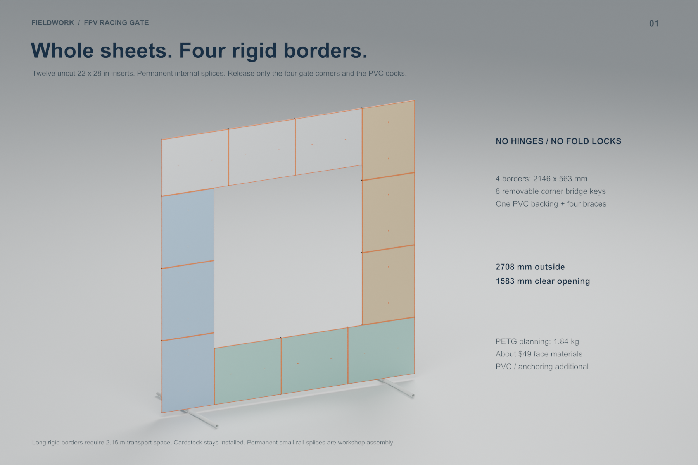
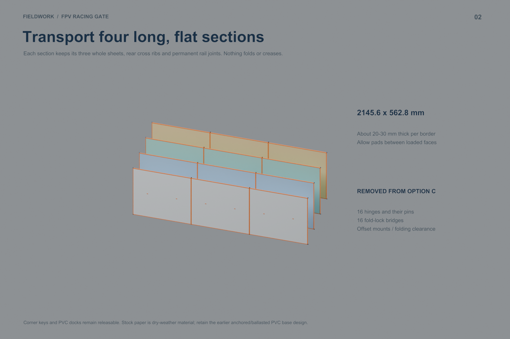
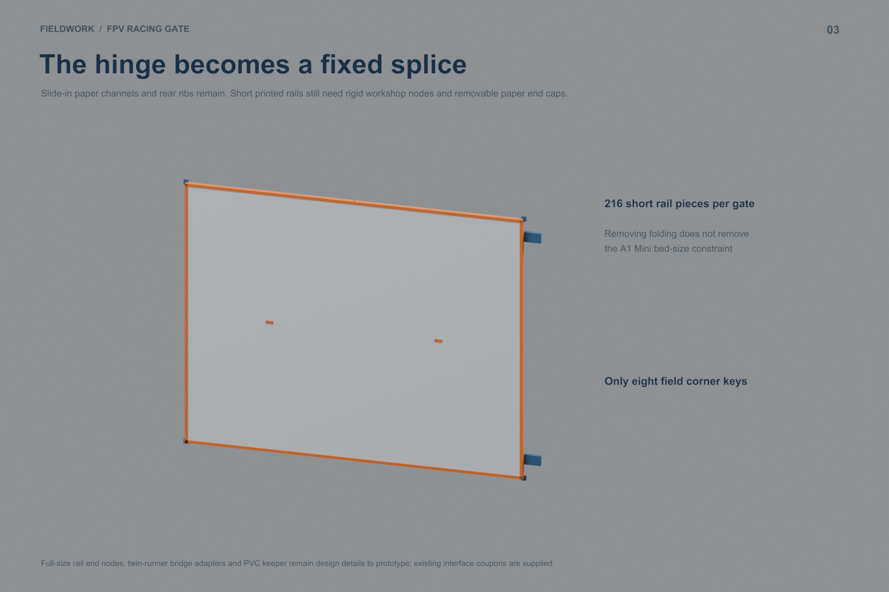
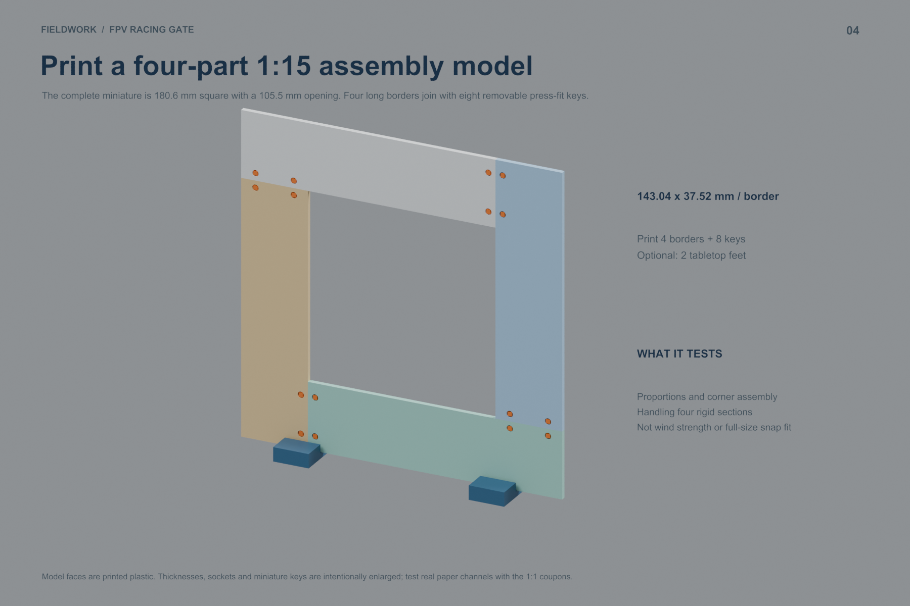
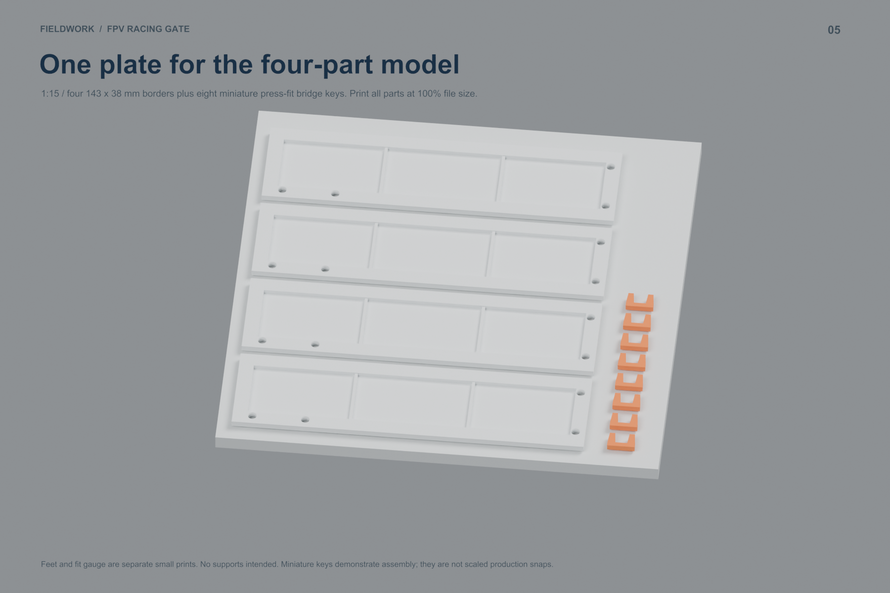
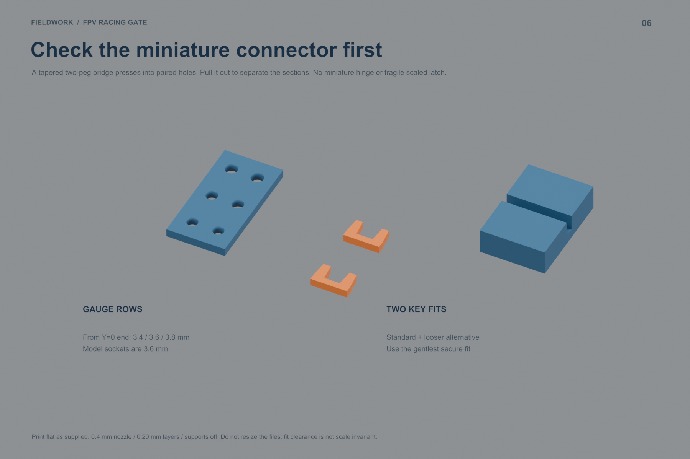

Full-size audit: Part quantities and printer-volume findings. Rear ribs are oversized; final production connectors remain unfinished. The miniature is a separate printable assembly model.
No hinges or fold locks. Twelve uncut posterboard sheets in four 2146 × 563 mm borders. Outside 2708 mm; opening 1583 mm. Eight corner keys and sixteen PVC docks remain removable.
The four border pieces measure 143 × 38 mm each. The assembled model is 181 mm square. Faces are printed plastic; miniature thicknesses and press-fit keys are enlarged for practical printing.
A1 Mini, 0.4 mm nozzle, 0.20 mm layers, Generic PLA, supports off. Import at 100% file size. Check your printer, filament and build plate in Bambu Studio before printing. No physical print has yet been tested.
Geometry-only model layout · Geometry-only fit layout · Slice and geometry checks
Full-size planning estimate: 1.84 kg PETG, targeting two 1 kg spools, and about $49 consumed face materials at $20/kg filament and $0.99/sheet. Excludes PVC, anchors, brace clamps and labor. Full-size production connector details and physical wind/fit validation remain outstanding.






Previous folding comparison is committed as d6d0196. This iteration accepts 2.15 m long transport sections. The miniature evaluates layout and assembly, while actual paper/PVC interfaces require the separate 1:1 fit samples.